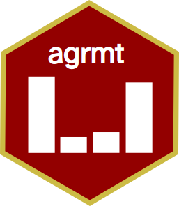

Agreement, Consensus, Dispersion, and Polarization in R
The R package agrmt calculates agreement, consensus, concentration, dispersion, and polarization in ordered rating scales. It implements functions to calculate agreement, consensus, or polarization, including Cees van der Eijk's (2001) algorithmic measure of agreement A, which can be used to describe agreement, consensus, or polarization among respondents.
The following functions are available in the package: agreement, polarization, ordinal dispersion, AJUS classification, ISD classification, and (multiple) modes. It also implements measures of consensus (dispersion) by Leik, Tatsle and Wierman, Blair and Lacy, Kvalseth, Berry and Mielke, and Garcia-Montalvo and Reynal-Querol. An implementation of Galtungs AJUS-system is provided to classify distributions, as well as a function to identify the position of multiple modes.
For a comparison of different measures of agreement, see Aeppli, Clem, and Didier Ruedin. 2022. 'How to Measure Agreement, Consensus, and Polarization in Ordinal Data'. SocArXiv. osf.io/syzbr.
The R package agrmt is open source distributed under the MIT License. It is written and maintained by Didier Ruedin.
Last update of this page 15 February 2025